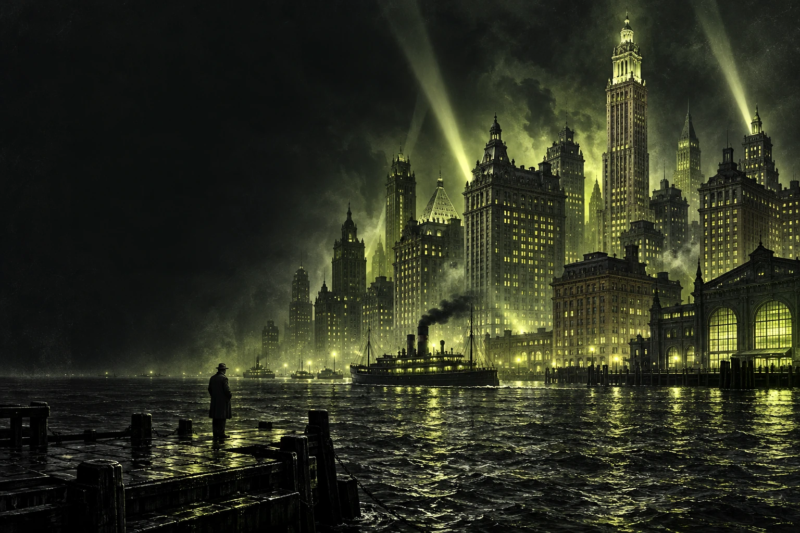
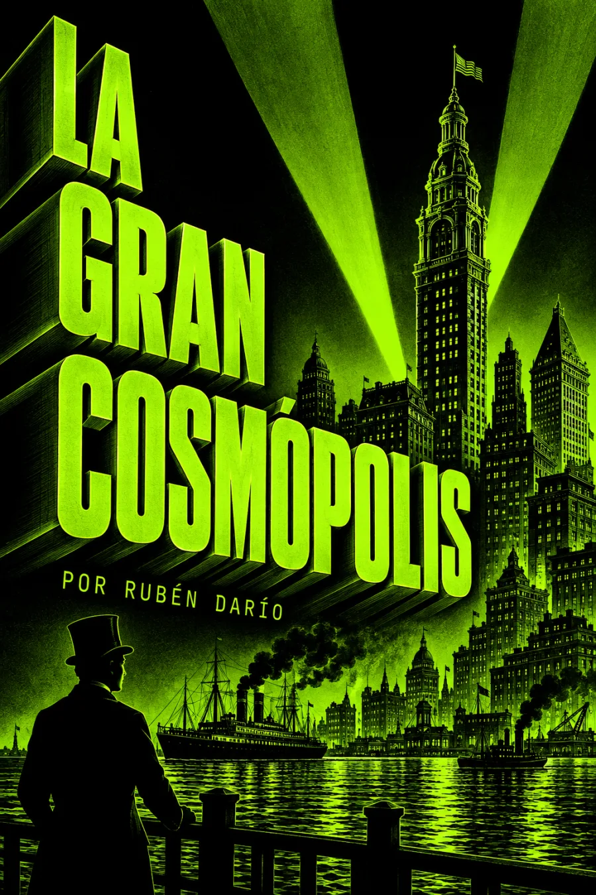

Audiolibros · Cuarta Ola
Rubén Darío · Composición: 1914
Publicación en Lira póstuma: 1919
La gran
cosmópolis
Todo brilla. No todos viven en la luz.
Acero, riqueza y una ciudad que no descansa.
Bajo su grandeza, Darío escucha el dolor.

El pulso de la ciudad. El peso de sus contrastes.
Grabación próximamente
Volumen

La sombra del progreso
Los edificios se elevan, las máquinas trabajan y la riqueza circula. Frente a esa ciudad desmesurada, la voz de Darío insiste en lo que el espectáculo no consigue ocultar: la miseria detrás de la Quinta Avenida y el frío de quienes permanecen junto al río.
La altura de la ciudad no mide el bienestar de quienes la habitan.
El poema contrapone el lujo del Waldorf Astoria con la vulnerabilidad de la calle. Sus enumeraciones y la reiteración del dolor imprimen un ritmo insistente a la crítica del dinero y del poder. La mirada es severa, aunque el final reconoce también el afecto y la alegría de la infancia.
En voz alta, conviene escuchar cómo la acumulación acelera el paso y cómo cada regreso al dolor interrumpe el deslumbramiento. El cambio final de tono abre una pausa humana dentro del ruido de la metrópoli.
Texto consultado en Lira póstuma: Project Gutenberg · «La gran cosmópolis». Ilustración interpretativa. El poema fue recogido en Lira póstuma (1919); su composición se fecha en diciembre de 1914. La fecha del volumen consta en el catálogo del Archivo IIAC de la UNTREF. Lira póstuma · texto de referencia.
La lectura
Lectura completa
Grabación próximamente. El poema se ofrecerá como una lectura continua, sin divisiones añadidas.
Valoración

Bueno